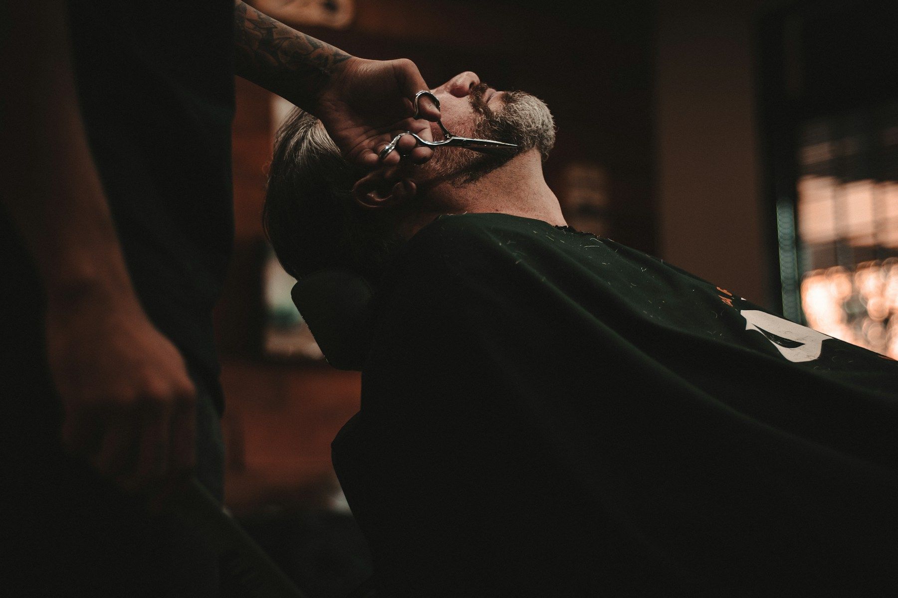

RM01 / A PRECISÃO
Rafael Martins
Degradês e cortes contemporâneos.

BRAGA · BARBEARIA & GROOMING
VELHA ESCOLA. NOVA ATITUDE.
Cortes com carácter. Barbas com história.
O cuidado de sempre, à tua maneira.
01 / O QUE FAZEMOS
Do clássico de sempre ao próximo look.
Escolhe o serviço. Nós tratamos do resto.
Serviços e preços ilustrativos. Confirma os serviços disponíveis e os valores na página de marcações do Setmore.
02 / A CASA
A BRASA nasce de uma ideia simples: devolver tempo ao ritual de ir ao barbeiro. Ouvir primeiro. Perceber o teu estilo. Trabalhar cada detalhe.
Um espaço de bairro com uma atitude contemporânea. Entras para um corte. Ficas pela conversa.
Conhece o nosso espaço ↗03 / QUEM ESTÁ DESTE LADO
Três personalidades.
O mesmo respeito pelo ofício.
Degradês e cortes contemporâneos.
Tesoura, textura e clássicos com carácter.
Barbas desenhadas e acabamentos cuidados.
Equipa fictícia. Ilustrações tipográficas criadas para a demonstração.
O teu estilo. O nosso ofício.
Braga, Portugal
Localização ilustrativa
Terça a sexta · 10h–19h
Sábado · 09h–17h
Domingo e segunda · Encerrado